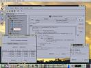
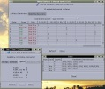
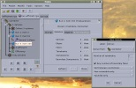
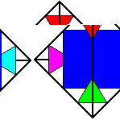

Regina
The Application Formerly Known As Normal
Copyright © 1999-2001, Ben Burton
Website last updated 27 September 2001

Regina is essentially a topological calculator with a bent towards
normal surface theory. It allows 3-manifolds to be created, manipulated
and their properties of interest determined.
Its primary uses (in my opinion) include:
- the ability to examine 3-manifolds too complex to study by hand;
- the ability to use the census feature to run tests on
all 3-manifolds of a given type;
- the ability to bring my PhD thesis closer to completion.
(Back to contents...)
Amongst other things, features of Regina include:
- Triangulations:
- Creation:
- Automated creation of standard triangulations
- Importing
SnapPea
triangulations
- Hand editing of individual face gluings
- Properties:
- Detailed skeletal information
- Algebraic properties including various
homology groups
- Finding subcomplexes with standard structures
- Modification:
- Triangulation simplification
- Common subdivisions
- Elementary moves (such as Pachner moves)
- Census:
- Creation of a census of all triangulations of a given
type
- Normal surface theory:
- Calculation of all vertex normal surfaces under standard
sets of matching equations
- Ability to calculate and/or view normal surfaces in
different coordinate systems
- Calculation of basic properties of normal surfaces
- Support for spun and other non-compact normal surfaces
- Support for immersed and singular normal surfaces
- Filtering of normal surfaces by various properties
- Scripting:
- Ability to write and run complex scripts in
Jython that offer
full access to the program's capabilities
- Support for custom libraries of Jython routines to
share between files
- File structure:
- A well-organised hierarchial file structure
- Support for storing miscellaneous data such as notes and
scripts along with topological structures in a single
file
- Interfaces:
- A full graphical user interface that is hopefully not overly
difficult to use
- A direct Jython console interface with no GUI for
immediate access to the calculation engine
- Allows the calculation engine to run as a CORBA server,
possibly on a different machine from the GUI
- Extensibility:
- Strong modularisation within the engine to allow users
to add their own extensions
without excessive trauma
(and please! - mail me
your additions and I will
be able to include them in future releases)
- Extensive documentation of both the calculation engine
and the graphical interface to aid the creation of new
routines and the understanding of existing routines
- User Manual:
(Back to contents...)
A few screenshots are available. Click on an image to see a full scale
version.
 Illustrates a variety of features
including built-in scripting
 Obtaining normal surfaces and
other information from a triangulation
 Forming a census
Thanks to Murray Keir for the gorgeous sunset in the background.
(Back to contents...)
Regina - A Normal Surface Theory Calculator
Copyright © 1999-2001, Ben Burton
Regina has been released under the
GNU General Public License.
It is hereby explicitly allowed that this software may be run
with any implementation of the core Java classes (the classes that
implement the official Java API) without the GPL applying to that
implementation of the core Java classes.
This program is free software; you can redistribute it and/or
modify it under the terms of the GNU General Public License
as published by the Free Software Foundation; either version 2
of the License, or (at your option) any later version.
This program is distributed in the hope that it will be useful,
but WITHOUT ANY WARRANTY; without even the implied warranty of
MERCHANTABILITY or FITNESS FOR A PARTICULAR PURPOSE. See the
GNU General Public License for more details.
You should receive a copy of the GNU General Public License
along with this program; if not, write to the Free Software
Foundation, Inc., 59 Temple Place - Suite 330, Boston, MA 02111-1307,
USA.
(Back to contents...)
Both binary and source downloads are available from the
SourceForge
project site. Be aware of the
GPL License as described above, which is also
contained in the downloadable archives.
- Linux binaries:
Archive regina-version_bin.tgz contains a
complete binary distribution for linux.
The application will be extracted into directory
regina-version/. Instructions for running the
application are included in
regina-version/README.txt.
- Windows binaries:
Currently only linux downloads are available. I'm still
working on windows support; I'll post windows binaries
when they're ready.
- Sources:
Archive regina-version_src.tgz contains a complete
source distribution. The sources will be extracted into directory
regina-version/. Instructions for compiling the
application are included in
regina-version/README.txt.
To extract archive stuff.tgz, type
tar -zxf stuff.tgz.
(Back to contents...)
The documentation for Regina can be viewed
here online.
There are several ways of obtaining the documentation on your machine.
It is recommended that you use a custom help browser (this can be set up
through the Options-Help Browser menu item), since the internal
JavaHelp system has problems with some of the HTML.
- If you wish to use a custom help browser from inside Regina or
if you wish to browse the documentation from outside Regina,
download archive regina-version_doc.tgz.
This will extract the documentation into directory
regina-version/docs/normal/docs/.
- If you wish to use Regina's internal help browsing system, you
can download the jar archive
regina-docs-version.jar.
Rename this to regina-docs.jar
and the help browser will use this jar
as is; there is no need to unpack it. You will need to run
regconf to tell the internal help browser where to
find this jar.
- You can generate the documentation from the sources.
Move to the main
regina-version/ directory and type make
bindocs. The documentation will be generated in the
subdirectory docs/normal/docs/
and a complete documentation jar regina-docs.jar will
be created in the subdirectory bin/.
To extract archive stuff.tgz, type
tar -zxf stuff.tgz.
(Back to contents...)
In 1997 in Melbourne, David Letscher,
Richard Rannard and myself under
the guidance of Hyam Rubinstein planned out a program that would do
normal surface theory and everything else besides. Much groundwork
planning was done, epsilon code was written and then things kind of
faded away. David Letscher revived the project on his own and in 1999
presented Normal 1.0. This program performed triangulation
simplification and found vertex normal surfaces, was written in Java and
was a proof-of-concept program that normal surface theory was
computationally feasible.
In March 1999, David Letscher and I sat down to write a new version of
the program from scratch. The new version would have a calculation
engine written in C++ for speed and would have a Java GUI for
portability and for (imho) the cool things that Java provides for
writing interfaces (and I know there are people who will disagree with
me on this, but hey). It would be carefully designed and written with
rigour and extensibility in mind, allowing for the possibility of
add-ons written by other people.
David however leads a busy life and pulled out of the project, but
remains to offer fabulous technical advice. In late 2000 a prerelease of the
new program was ready (under an appropriate definition of `ready') and
voila, here we are today.
(Back to contents...)
If you have any suggestions, problems, bugs, wishes, frustrations or
otherwise miscellaneous comments, I would really love to hear
them. This program is permanently under development and I would like to
hear what people want out of it.
Alternatively, if you have written additions yourself and think they
could be useful in the general release, I would love to hear about them.
The more the merrier! It's probably worth mailing me first though in
case I or someone else have already written said addition and it's
currently being debugged and two days away from release.
Incidentally, even if you have no comments to make, I'd like to hear
from anyone using the program - even if it's just to say hi -
mainly because I'm interested to see
who's using it and how it's being used.
The best way to contact me is by email at
benb@acm.org.
(Back to contents...)
Regina
The Application Formerly Known As Normal
Copyright © 1999-2001, Ben Burton
Written by Ben Burton
Normal 1.0 was written by David Letscher, who also provided invaluable
technical advice for this project.
Additional code contributed by:
Thanks to:
- William Jaco
- Hyam Rubinstein
- Jeff Weeks
- The American Institute of Mathematics
- Oklahoma State University
- The University of Melbourne, Australia
(Back to contents...)
This normal surface theory calculator has been named after
Regina Basman
who once told me she was the most normal person I knew. She's doing a
mathematics PhD, reads cool books and sometimes draws people, and she likes
running around rainforests in the dark.

(Back to contents...)
{kind=link}
{kind=link}
{kind=link}